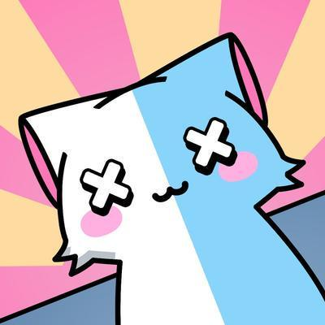

Dekirisu


Development
This Site


(WIP) Racing Game


Own UI/ECS Syntax
(WIP) Cozy Game
(Proto) 2D Platformer
Game UI
(Proto) Tennis Game


Own Asset Bindings
Own Data Bindings
Data Pattern Conversion
Own String Handling
Own Vim Theme

Own VSCode Theme


More Small Crates

Motion Design
Ratatui | Header


Ratzilla | Header
Git-Cliff | Header
Social Media Border
Buns | Header
Mevy | Header
Bevy-Cell | Header
VSCode Theme | Header
Strung | Header